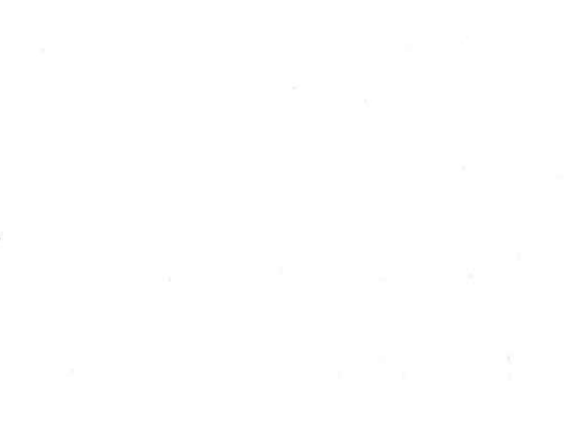

偽

Kun: itsuwaru, itsuwari, nise | On: gi
false ・ fake ・ deceit ・ to lie
Explanation
A phono-semantic character, originally written 僞, it sets the person sign beside 爲, which provides the sound and functions as the on-reading indicator. In its earliest sense, the character did not center on lying but on transformation: it described changing into and becoming something different, much like 化, and was once used interchangeably with 訛. As usage developed, the meaning moved from the idea of the artificial or provisional (karigi) to the concrete sense of deception and fraud (gisa). Hence its present use for falsehood, a fake, and to lie.